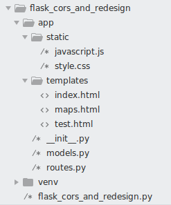

Flask Setup
Source Miguel Grinberg and Real Python
This is a great login tutorial

flask_cors_and_redesign.py Here all we need to do is import the app
from app import app
app/__init__.py
from flask import Flask
from flask_cors import CORS
app = Flask(__name__)
CORS(app)
from app import routes
app/routes.py
from app import app
from flask import render_template, jsonify
import math
@app.route('/', methods=['GET'])
def index():
return render_template('index.html', variable='test_variable')
@app.route('/api', methods=['GET'])
def api():
return jsonify({'data' : 'Hello World!'})
@app.route('/map', methods=['GET'])
def map():
return render_template('maps.html')
# return jsonify({'data' : 'Hello World!'})
@app.route('/get_latlngs', methods=['GET'])
def get_latlngs():
zip_latlng = {
'lat': 42.3601,
'lng': -71.0589,
}
post_latlngs = [
{'lat': 0, 'lng': 0},
{'lat': 0, 'lng': 0},
{'lat': 0, 'lng': 0},
{'lat': 0, 'lng': 0},
]
num_of_posts = len(post_latlngs)
rad_spacing = 2*math.pi/num_of_posts
radius = 1
for i,v in enumerate(post_latlngs):
post_latlngs[i]['lat'] = zip_latlng['lat'] + radius*math.cos(i*rad_spacing)
post_latlngs[i]['lng'] = zip_latlng['lng'] + radius*math.sin(i*rad_spacing)
return jsonify(post_latlngs)
app/models.py
# Not shown, but this layout is for directory structure mainly.
Before running it, though, Flask needs to be told how to import it, by setting the FLASK_APP environment variable:
(venv) $ export FLASK_APP=microblog.py
If you are using Microsoft Windows, use set instead of export in the command above.
Are you ready to be blown away? You can run your first web application, with the following command:
bash
(venv) $ flask run
* Serving Flask app "microblog"
* Running on http://127.0.0.1:5000/ (Press CTRL+C to quit)